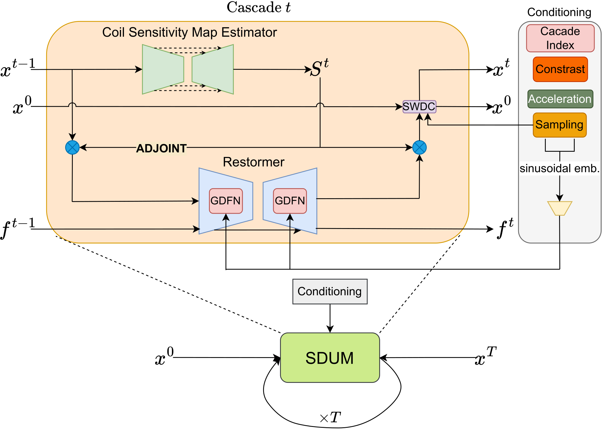
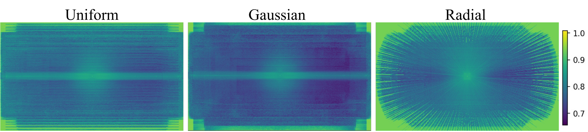
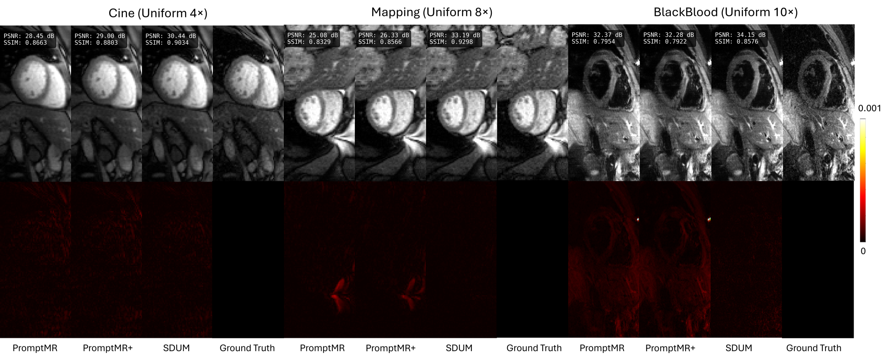
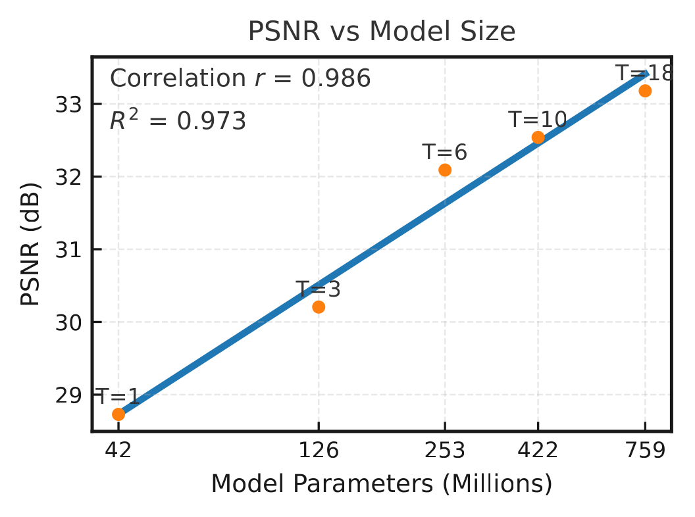
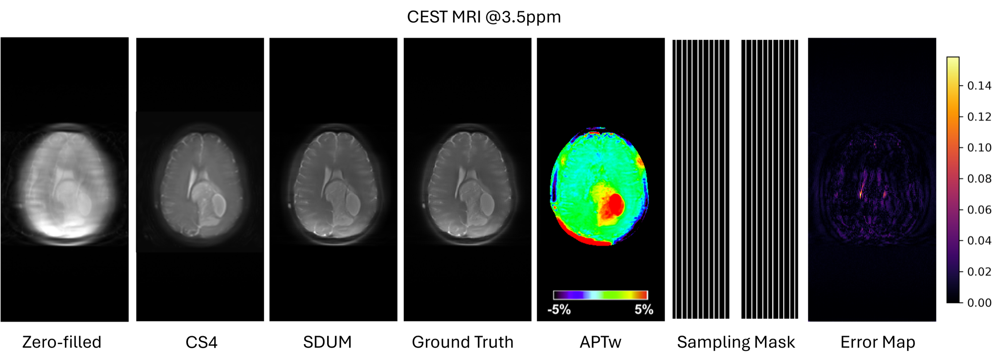
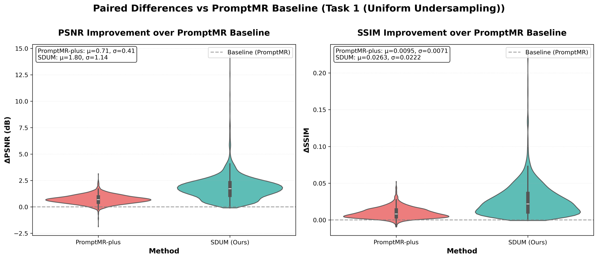
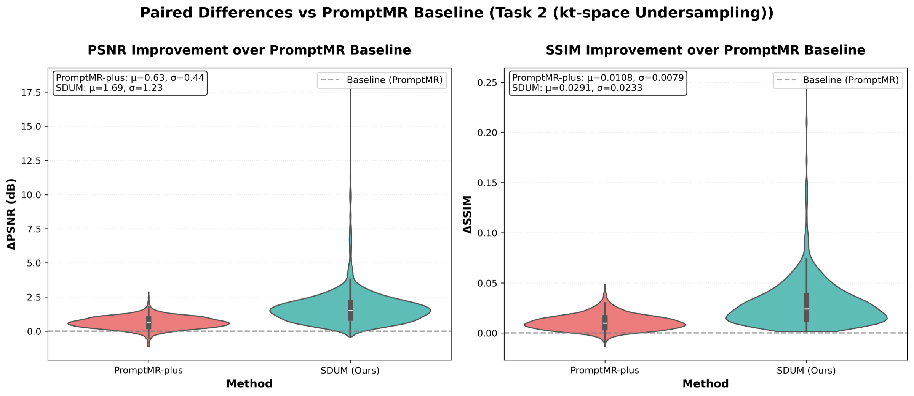

ECCV 2026 · MRI RECONSTRUCTION / DEEP UNROLLING
SDUM：面向通用 MRI 重建的可扩展深度展开模型
SDUM: A Scalable Deep Unrolled Model for Universal MRI Reconstruction
临床心脏 MRI 的序列、采样轨迹、加速倍数、机型和人群极其多样，而多数重建模型仍绑定单一协议。SDUM 用一套「Restormer 展开主干 + 每级线圈敏感度估计 + 采样感知加权数据一致性 + 通用条件 + 渐进级联扩展」，让一个模型覆盖 CMRxRecon 全部赛道，并首次系统报告级联深度与数据量的规模规律。
- 原文
- arXiv:2512.17137v2（正文 6 节 + 附录 A–E）
- 录用
- ECCV 2026（LNCS 17039, pp. 383–401；DOI 10.1007/978-3-032-37435-6_21）
- 代码 / 权重
- NV-Raw2insights-MRI ↗ · Hugging Face ↗
- 规模
- 14 编号公式 · 7 图 · 7 表 · 44 文献
本页以 arXiv:2512.17137v2 的 LaTeX 源码与 arXiv HTML 为准做中英文逐段对照翻译，并核对 ECCV 2026 正式出版信息（官方录用列表 AcceptedPapers ↗、Springer 章节 DOI ↗、会议 camera-ready PDF eventhosts 6193.pdf ↗）：两版正文、公式、图表与数字一致，ECCV 版标题为 “SDUM: A Scalable Deep Unrolled Model for Universal Cardiac MRI Reconstruction”，摘要中把 “deep-learning” 明确为 “deterministic deep-learning”，并把 CEST 展开为 “chemical exchange saturation transfer”。原文用数字引用，本页参考文献按原文编号 [1]–[44] 排列，正文引用保留编号并链接到条目；中文为标题翻译，不译作者与期刊名。图中只翻译图注，不重绘曲线与样本；网页图片由源码 PDF/PNG 转换并缩放，不是 PDF 原像素的逐位副本。所有额外讲解均标为「译者注」，与原文分开。
原文：arXiv 摘要 ↗ · arXiv HTML ↗ · 原文 PDF ↗ · ECCV 2026 官方 PDF ↗ · Springer DOI ↗ · 官方代码 ↗ · 官方权重 ↗ · 返回论文条目 →
读之前，先把这条链路分清
这一段是译者注，不是原文。它只做一件事：让你在读到公式 (1)–(14) 时，知道每个量在做什么，以及哪些数字来自论文、哪些只是合理推断。
- 前向模型：多线圈欠采样测量写成 y = M·𝓕(S·x) + n。S 是线圈敏感度图（coil sensitivity map），M 是采样掩膜，欠采样就是让 M 只保留部分 k 空间位置。
- 展开（unrolling）：把「梯度下降 + 近端算子」的迭代算法截断成 T 级（cascade），每级先做数据一致性（data consistency, DC）更新，再用一个可学习网络（这里是 Restormer）做近端/正则化。级与级之间共享结构、不共享参数。
- 数据一致性：把当前估计变换到 k 空间，与真实测量比较，只修正采到的位置。传统做法是全 k 空间一个标量步长；本文把权重改成一张与采样模式相关的可学习 k 空间权重图（SWDC）。
- 通用条件（UC）：把「第几级」和「协议元数据（掩膜类型、加速倍数、采集类型）」编码成向量，注入每个 Transformer 块，使同一个网络在不同级、不同协议下改变行为。
- 指标：PSNR、SSIM 越大越好，NMSE 越小越好。CMRxRecon 官方榜以 SSIM / PSNR 为主，表中数字均为官方验证集或榜单结果。
- “规模”两条轴：深度轴是级联数 T（1→3→6→10→18，参数量 42M→759M），数据轴是训练数据比例（40%→80%→100%）。论文报告 PSNR 与 log(参数量) 近似线性（r=0.986，R²=0.973）。
术语速查（译者注）
- 展开 / 级（cascade）
- 把迭代重建的每一步「展开」成网络的一级。第 t 级接收第 t−1 级的图像并输出更接近解的一版。
- CSME
- Coil Sensitivity Map Estimator，线圈敏感度图估计器。本文每一级各有一个复值 U-Net，估计该级所需的敏感度图。
- SWDC
- Sampling-aware Weighted Data Consistency，采样感知加权数据一致性。用可学习的 k 空间权重图代替标量 DC 权重。
- UC
- Universal Conditioning，通用条件。级索引与协议标签的正弦嵌入相加后注入所有 Transformer 块。
- MDTA / GDFN
- Restormer 的两个核心块：多头深度可分离转置注意力（在通道维做注意力，复杂度 O(HW·C²)）与门控深度可分离前馈网络。
- ACS
- Autocalibration Signal，k 空间中心的自校准区域。正文说 CSME 不依赖 ACS，但附录 C.1 又写 CSME「在完整采样的 ACS 区域上运算」——这是原文内部不一致，见译者注。
摘要
English original
临床心脏 MRI 涵盖不同的对比度、采样轨迹、加速倍数、扫描仪与患者人群，然而大多数深度学习重建方法仍然只针对特定协议。我们提出可扩展深度展开模型（Scalable Deep Unrolled Model，SDUM），它把基于 Restormer 的展开重建器、逐级线圈敏感度估计、采样感知加权数据一致性，以及对级索引与采集元数据的通用条件整合在一起。单个 SDUM 模型在所有 CMRxRecon2025 赛道上都取得最先进性能，且无需任何任务特定微调；在 CMRxRecon2024 上比 PromptMR+ 高 +0.55 dB。规模实验显示：深度增加到 18 级时收益接近对数增长（r=0.986，R²=0.973）；数据规模扩大带来持续但递减的收益（40% 时 32.72 dB，100% 时 33.18 dB）。SDUM 还能零样本泛化到未见过的院内 CEST MRI（43.57 dB PSNR，0.9769 SSIM）。在 fastMRI 脑数据上单独训练时，SDUM 比 PC-RNN 高 +1.8 dB。这些结果支持 SDUM 作为一个可扩展框架，在心脏 MRI 之外的异构采集设定中实现稳健 MRI 重建。
English original
1 引言
English original
心脏 MRI（CMR）是无创评估心脏形态、功能与组织特征的金标准。一次临床 CMR 检查通常要采集十几个甚至更多序列：用于室壁运动的电影（cine）、用于组织特征的 T1/T2 定量（mapping）、用于纤维化的晚期钆增强（LGE）、用于缺血的灌注（perfusion）、用于瓣膜评估的血流（flow）、用于应变的标记（tagging）；采样方式包括笛卡尔、径向、螺旋或 kt 空间，加速因子从 4× 到 24×。扫描场强（1.5T、3T、正在出现的 5T）、线圈阵列、厂商软件与患者人群（成人、儿童、多病种）又进一步加剧了不同临床中心之间的异质性。尽管近年深度学习方法[12]、[26]、[6]、[1]、[28] 在受控设定下取得了很强性能，但它们通常沿协议边界碎裂：为某一种采样掩膜或加速因子训练的模型，往往在采集条件改变时性能下降。这种脆弱性阻碍了在多中心临床环境中的部署，也促使我们研究一个单一、普遍适用的心脏 MRI 重建模型，它能在无需逐协议重训的情况下稳健处理异构输入。
English original
假设。我们假设：尽管心脏 MRI 协议异常多样，但底层的心脏解剖与生理施加了一个共享的图像先验，它可以被单个模型学到。具体而言，一个深度展开重建网络，若通过通用条件以采集物理（采样模式、轨迹类型、加速因子）为条件，并用渐进课程训练，就能把协议相关的采集伪影与解剖相关的内容解耦。跨协议共享的先验充当隐式正则，使模型对中心、疾病、场强与人群之间的分布偏移具有稳健性。
English original
规模缺口。在相邻领域，经验性的规模分析[15]、[13]、[42] 量化了误差如何随参数、数据或算力衰减，已成为模型设计与资源分配的实用指南。MRI 重建缺乏这样的指导。实践者只能靠试错来决定是投入更宽的主干、更深的级联展开，还是更大的训练集，对回报与饱和没有原理性的理解。
English original
现有方法的局限。当前对通用 MRI 重建的尝试仍不完整。许多深度展开模型[12]、[1] 使用标量数据一致性（DC）权重，忽略了每条轨迹特有的采样密度与噪声特征。条件机制即便存在，也往往是临时拼凑或任务特定的[35]。线圈敏感度图（CSM）通常预先计算并固定，限制了模型对运动与场不均匀性的稳健性。尚无方法被验证为能在心脏 MRI 异质性的完整谱系上同时成立：多对比度、多轨迹、多中心、多场强、多人群。
English original
我们的方法：SDUM。我们提出可扩展深度展开模型（SDUM），一个通过五个协同组件为通用心脏 MRI 重建设计的框架：
English original
- 基于 Restormer 的重建主干：多头深度可分离转置注意力（MDTA）与门控深度可分离前馈网络（GDFN）[40] 以良好的显存效率同时捕捉长程依赖（用于展开混叠）与局部结构（用于保留边缘）。一个浅层两级金字塔既保留高分辨率细节，又能聚合全局上下文。
- 可学习的逐级线圈敏感度图估计（CSME）：一个基于 U-Net 的估计器在每一级细化 CSM，缓解运动、噪声与场不均匀带来的误差，且不依赖自校准区域[23]、[30]。
- 采样感知加权数据一致性（SWDC）：我们不再使用标量 DC 权重，而是学习以采样模式为条件的空间变化 k 空间权重图，实现掩膜特定、密度感知的保真约束，把笛卡尔与非笛卡尔轨迹统一在单个可学习模块中。
- 通用条件（UC）：级索引 t 与协议元数据（掩膜类型、加速倍数、模态）的正弦嵌入经 MLP 映射后注入每个 Restormer 块[21]、[20]，使单个模型能跨多样采集调整行为。
- 渐进级联扩展：训练时固定首尾级、成对复制内部级，随深度增加复用已学权重，从而稳定优化[3]、[16]。
English original
- Restormer-based reconstruction backbone: Multi-Dconv Head Transposed Attention (MDTA) and Gated-Dconv Feedforward Network (GDFN) [40] jointly capture long-range dependencies (to unfold aliasing) and local structures (to preserve edges) with favorable memory efficiency. A shallow two-stage pyramid preserves high-resolution detail while enabling global context aggregation.
- Learned per-cascade coil sensitivity map estimation (CSME): A U-Net-based estimator refines CSMs at each cascade, mitigating errors from motion, noise, and field inhomogeneities without relying on autocalibration regions [23, 30].
- Sampling-aware weighted data consistency (SWDC): Instead of a scalar DC weight, we learn spatially varying k-space weight maps conditioned on the sampling pattern, enabling mask-specific and density-aware fidelity enforcement that unifies Cartesian and non-Cartesian trajectories in a single learnable module.
- Universal conditioning (UC): Sinusoidal embeddings of cascade index t and protocol metadata (mask type, acceleration, modality) are mapped through MLPs and injected into every Restormer block [21, 20], allowing a single model to adapt its behavior across diverse acquisitions.
- Progressive cascade expansion: Training proceeds by doubling interior cascades while fixing endpoints, stabilizing optimization and reusing learned weights as depth increases [3, 16].
我们在覆盖多种心脏协议（BlackBlood、Cine、Flow2d、LGE、Mapping、Perfusion、T1rho、T1w、T2w、Aorta、Tagging）、包含笛卡尔与非笛卡尔采样的异构 CMRxRecon 数据上训练 SDUM。在 CMRxRecon2025 挑战[37] 上——它评估对未见中心、疾病、5T 场强与儿童人群的泛化——单个 SDUM 在全部四个赛道上无需任务特定微调即达到最先进性能，比专用基线高出最多 +1.0 dB。在 CMRxRecon2024[32] 上，SDUM 超过获胜方法 PromptMR+[35] +0.55 dB，并在超过 90% 的配对验证案例中取胜。我们进一步评估对未见扫描仪厂商/协议的院内 CEST MRI 的严格零样本迁移，SDUM 在无适应的情况下达到 43.57 dB PSNR 与 0.9769 SSIM。为检验 SDUM 的设计原则能否迁移到心脏 MRI 之外，我们在 fastMRI 脑数据[41] 上单独训练一个模型，它比 PC-RNN[5] 高 +1.8 dB。我们还开展了（据我们所知）首个面向 CMR 重建的经验性规模分析，扫描级联深度 T 从 1 到 18、训练数据量从 40% 到 100%。重建质量遵循 PSNR ∼ log(参数量)，相关系数 r=0.986。除报告数字外，我们提炼了构建 MRI 重建基础模型的实用规模经验，包括需要多样性感知的数据扩展与算力最优训练。
English original
2 相关工作
English original
经典与深度学习 MRI 重建。经典加速 MRI 重建采用压缩感知[18]、并行成像（SENSE[23]、GRAPPA[9]、ESPIRiT[30]）与动态成像方法[8]、[19]。深度展开模型（DUM）[26]、[12]、[6]、[1]、[28] 把迭代优化整合进神经网络，交替执行数据一致性（DC）与可学习正则化步骤。相关工作还包括 KIKI-Net[7]、DeepComplexMRI[33]、PC-RNN[5] 以及 Plug-and-Play/RED 框架[31]、[24]、[43]。大多数展开模型使用标量 DC 权重；我们的 SWDC 学习以采样模式为条件的空间变化 k 空间权重。E2E-VarNet[28] 联合学习重建与敏感度估计，启发了我们的可学习 CSME 方案。
English original
心脏 MRI 重建。心脏 MRI 因对比度多样（cine、mapping、LGE、灌注、血流）、需要时间建模的动态采集、以及跨场强与人群的稳健性要求而具有独特挑战。近期面向心脏的方法包括 PromptMR[34] 与 PromptMR+[35]，它们用基于提示的条件做多对比度心脏重建；以及 HierAdaptMR[38]，它采用跨中心与协议的层次化适应。CMRxRecon 系列挑战[32]、[37] 通过提供大规模多对比度、多轨迹心脏 k 空间数据集与覆盖临床相关分布偏移的标准化评测，推动了进展。尽管有这些进展，尚无先前方法展示出单个模型能在心脏 MRI 异质性——多对比度、多轨迹、多中心、多场强、多人群——的完整谱系上无需任务特定微调地泛化。
English original
架构与条件。U-Net[25] 与复原 Transformer（SwinIR[17]、Restormer[40]）是广泛使用的主干；我们采用 Restormer 是因其良好的显存/算力折中。条件归一化（FiLM[21]、AdaLN[20]）可实现任务适应；在 MRI 中，PromptMR+[35] 与 HierAdaptMR[38] 用条件做多对比度重建。我们用物理信息驱动的通用条件扩展了这一范式。
English original
规模行为与训练。经验性规模分析[15]、[13]、[42] 在 NLP 与视觉中量化性能与参数/数据/算力的关系，指导资源分配。已有工作表明，增加展开深度（级联数）对重建性能很重要：ReconFormer[10] 用循环 Transformer 展示了这一点，深度展开模型也有类似发现[36]。然而，尚无先前研究系统刻画展开 MRI 模型在深度与数据两条轴上的规模行为。训练方面，我们的级联扩展把渐进训练[3]、[16] 用于稳定深度展开时的优化。
English original
3 方法
English original
3.1 问题建模
English original
MRI 重建的目标是从欠采样的多线圈 k 空间测量 y ∈ ℂC×H×W（C 个接收线圈）中恢复图像 x ∈ ℂH×W。前向模型为
English original
其中 S 表示线圈敏感度图，𝓕 是傅里叶变换，M 是二值采样掩膜，n 是采集噪声。真实世界的心脏 MRI 协议在对比度（cine、mapping、LGE、灌注、血流）、采样模式（笛卡尔、径向、螺旋、kt）与加速倍数上各不相同，因此模型必须处理异构的采集条件。
English original
重建被表述为最小化数据一致项与正则项之和的问题（下式未编号）：
English original
深度展开重建。令 A = M·𝓕。从零填充图像 x(0) 出发，第 t ∈ {0,…,T−1} 级执行近端梯度展开：
English original
其中 τt 是可学习步长，Dθ(t) 是可学习近端算子。完整模型 x̂ = x(T) 以级索引与协议元数据为条件端到端训练。
English original
3.2 可扩展深度展开模型
English original
SDUM 总览

Figure 1: SDUM overview. Each cascade combines a Restormer-based reconstructor, a learned CSME, sampling-aware weighted data consistency (SWDC), and universal conditioning (UC) on cascade index and protocol metadata.
深度展开 MRI 重建方法常常依赖预先计算的线圈敏感度图（CSM），而这些图因噪声、运动与场不均匀不可避免地不完美。
English original
我们采用含 T 级的深度展开架构。每一级包括：(i) 基于 Restormer 的图像重建器；(ii) 基于 U-Net 的线圈敏感度图估计器（CSME），它在重建过程中细化 CSM，且不依赖 ACS 区域；(iii) 采样感知的数据一致性算子，以掩膜相关的 k 空间加权执行前向模型。我们引入两个关键增强：
English original
带级间跳跃连接的自适应展开。每一级不仅接收上一级的输出，还接收上一级在降采样层级 fl 上的解码器特征跳跃连接。这缓解梯度消失、便于训练更深的模型，并支持中间特征的有效复用。
English original
相邻层/帧输入。对于动态（例如电影心脏 MRI）与三维体积 MRI，每一级可以访问时间或空间上相邻的帧。这些输入与当前层一起送入重建器，使模型能利用时间冗余或三维解剖上下文。
English original
3.3 Restormer 主干
English original
我们采用 Restormer[40] 作为逐级重建器，因为它的多头深度可分离转置注意力（MDTA）与门控深度可分离前馈网络（GDFN）以 O(HW·C²) 复杂度同时捕捉非局部与局部依赖。我们使用带 MDTA+GDFN 块的浅层两级金字塔（一次下采样/上采样），既保留高分辨率细节又提供全局上下文。经验上，这一浅层设计在我们的设定中优于更深的金字塔：额外的下采样扩大感受野，却趋于过度平滑细结构并削弱小病灶对比。更宽但更浅的逐级设计还通过改善跨级梯度流来稳定深度展开。更多实现细节见补充材料。
English original
在第 t ∈ {0,…,T−1} 级，我们用 U-Net CSME 估计线圈敏感度，然后施加 DC 与 Restormer 先验：
English original
其中 A = M𝓕，τt 是可学习 DC 步长，Norm(·) 施加逐像素的线圈归一化（Σc|Sc|²=1）。
English original
每一级都有自己的 CSME 与 Restormer 参数。CSME 是一个紧凑的复值 U-Net，通道递进为 {12,24,48,96,192}，使用实例归一化与基于反卷积的上采样；其输出按 S ← S / √(Σc|Sc|²) 归一化，以保持物理上有意义的线圈能量尺度。图像先验使用两级 Restormer，通道宽度 {256,512}、注意力头 {1,2}、块深度 {3,6}，后接两个精修块。这种「浅而宽」的设计既保留高分辨率结构，又通过 MDTA 实现长程交互。复值 MRI 数据表示为堆叠的实部/虚部通道，用实值算子处理；输入被填充到可被下/上采样层级整除的尺寸，以保证展开的数值稳定性。
English original
3.4 采样感知加权数据一致性
English original
我们把标准标量 DC 权重替换为一张以采样模式为条件的、可学习的空间变化 k 空间权重图。第 t 级的标准 DC 梯度为
English original
由此得到更新 z(t) = x(t) − τt g(t)DC。
English original
k 空间中的加权残差。令 w(t) ∈ ℝH×W 为定义在 k 空间、跨线圈广播的非负权重图，且在未采样位置 w(t)=0。我们构造加权残差
English original
并把公式 (7) 替换为
English original
由此得到 SWDC 更新 z(t) = x(t) − τt g(t)SWDC。当 w(t)=M 时，公式 (9) 退化为标准 DC。如图 2 所示，SWDC 模块针对均匀、高斯与径向采样模式学到不同的权重图。可学习权重 w(t) 在最大分辨率 H×W 上初始化，并中心裁剪到与 y 匹配；我们为每种采样模式 s 维护不同的 ws(t)，以实现按模式区分的 DC。SWDC 相对经典密度补偿的详细论证见补充材料。
English original
三种采样模式下学到的数据一致性权重图

Figure 2: Example learned sampling-aware data-consistency weight maps showing spatial adaptation to sampling patterns.
3.5 通用条件机制
English original
我们让每一级以 (i) 自身级索引 t 与 (ii) 编码掩膜类型、采集类型与加速因子的离散协议标签 y 为条件。两者都经正弦嵌入与两层 MLP 映射后相加，形成单个条件向量注入所有 Transformer 块，使单个模型能跨级联深度与协议自适应。
English original
令 φ(·):ℝ→ℝd0 表示正弦编码器，ht,hy:ℝd0→ℝd 为两层 MLP，
English original
注入 Transformer 块。令 f(t)ℓ ∈ ℝHℓ×Wℓ×Cℓ 为第 t 级第 ℓ 层的特征。每个 Transformer 块接收 c，并以由 c 导出的可加、空间广播偏置施加注意力与门控深度可分离前馈网络（GDFN）：
English original
其中 Bℓ(c) 用单个线性层产生一个 Cℓ 维向量，并在 (Hℓ,Wℓ) 上广播。同一个 c 经（感知时间步的顺序封装器）传给 Restormer 中每一级所有编码器、解码器与精修块。
English original
3.6 渐进级联扩展
English original
我们用逐渐增加级联深度的课程训练 SDUM[3]、[16]。从一个含 Tk−1 级的阶段出发，下一阶段扩展到 Tk = 2(Tk−1−1)：保持首尾级固定，只复制内部级。所有参数（Restormer 权重、CSME 权重、DC 步长、SWDC 权重）都从上一阶段热启动。这种「固定两端、中部加倍」的日程细化内部离散化，因为残差修正主要发生在内部，同时不扰动已收敛的端点参数，从而改善大 T 下的梯度流与收敛。
English original
具体地，我们定义阶段转移索引映射（未编号）：
English original
于是每个新级 t ∈ {0,…,Tk−1} 从上一阶段的第 πk(t) 级复制参数。实践中这意味着只复制内部级，端点级原样继承：
English original
从基础深度 T0=6 出发，本文使用的日程给出 T=6→10→18，经验上带来稳定优化，并相对在 T=18 直接一次性训练取得一致增益。
English original
4 实验
English original
我们在 CMRxRecon2024[32]、CMRxRecon2025[37] 与 fastMRI 多线圈脑[41] 上评估 SDUM。CMRxRecon2025 在 CMRxRecon2024 基础上增加了由未见中心、疾病类别、场强与儿童队列造成的分布偏移下的重建评测。除非另有说明，结果报告在官方验证集划分或挑战榜单上，指标为 SSIM ↑、PSNR ↑ 与 NMSE ↓。
English original
4.1 基线
English original
在 fastMRI 脑上，我们与经典 CS[18]、U-Net[25]、D5C5[26]、KIKI-Net[7]、VN[12]、VS-Net[6]、ComplexMRI[33] 与 PC-RNN[5]（fastMRI 获胜方法）比较。对于 CMRxRecon2024/2025，我们遵循官方协议，与榜单上名列前茅的方法比较，包括 PromptMR+[35]、Hamedani 等[2]、vSHARP+ARN[39]、IMR[32]、Shen 等[27]、HierAdaptMR[38] 与 GENRE-CMR[11]。
English original
（左）Regular Task 1：多中心
（右）Regular Task 2：多疾病
（左）Special Task 1：5T
（右）Special Task 2：儿童影像
数字逐格按 LaTeX 源码 tables/cmrxrecon25_results.tex 与 arXiv HTML/PDF 核对转录；加粗为每列最优。英文原图注：Table 1: Quantitative comparison on the CMRxRecon2025 challenge. Results are reported on the official leaderboard across four subtasks. A single SDUM (T=18) is used for all tracks without task-specific fine-tuning.
译者注（非原文）
四个子赛道中 SDUM 的增益并不相同：多中心 +0.26 dB、多疾病 +0.116 dB、5T +0.40 dB、儿童 +1.04 dB。论文正文称「最多 +1.0 dB」，对应的是儿童赛道；引用时应按具体赛道说明，而不是笼统说四个赛道都 +1 dB。
4.2 与最先进方法的比较
English original
CMRxRecon2025：通用心脏 MRI 重建。表 1 报告 CMRxRecon2025 榜单上的结果，该榜单评估模型在未见中心、疾病、场强与年龄组上的泛化。单个 SDUM 模型（T=18）用于全部四个子任务，不做任何任务特定微调，并在所有子任务上取得最高 SSIM 与 PSNR，超过 PromptMR+（32 级）[35]、HierAdaptMR[38]、Shen 等[27] 与 GENRE-CMR[11] 等强基线。在 Regular Task 1（多中心泛化）上——验证与测试数据都来自完全未见的医疗中心——SDUM 比第二优方法绝对高 +0.26 dB。在 Regular Task 2（多疾病评估）上——在疾病标签未公开的情况下评估对未见心血管状况的稳健性——SDUM 保持更优性能。在两个特别赛道（5T 与儿童）上，SDUM 泛化到训练中不存在的场强与年龄分布，比次优方法高出最多 +1.0 dB PSNR。这些结果验证了我们的假设：一个以协议物理为条件的模型可以泛化到心脏 MRI 异质性的完整谱系。
English original
CMRxRecon2024。表 2 报告官方 CMRxRecon2024 榜单上两个子任务的结果。SDUM 在 Task 1 上比 2024 年获胜方法 PromptMR+[35] 高 0.55 dB，并在空间均匀与时间变化采样条件下都提供一致的更高保真度。对整个验证集的配对案例分析进一步显示，SDUM 在 Task 1 的 90.3% 案例与 Task 2 的 93.9% 案例中胜过 PromptMR+，平均增益分别为 +1.091 dB 与 +1.060 dB。定性示例（图 3）显示出更清晰的心肌边界与更少的残余混叠伪影。
English original
（左）Task 1：均匀采样（4×, 8×, 10×）
（右）Task 2：k-t 高斯/径向/均匀（4×–24×）
数字逐格按 tables/cmrxrecon24_results.tex 与 arXiv HTML/PDF 核对；原文 Task 2 的 IMR 引用标记为 zhang_profile_3472363（Synapse 个人主页，编号 [44]），此处照原文保留。英文原图注：Table 2: Quantitative comparison on the CMRxRecon2024 challenge across Task 1 and Task 2. SDUM is configured to T=18.
跨心脏成像模态的定性比较

Figure 3: Qualitative comparison across cardiac imaging modalities. Three representative cases from the CMRxRecon2024 Task 1 validation set show the superior performance of SDUM over PromptMR and PromptMR+.
4.3 消融实验
English original
我们在 CMRxRecon2025 挑战验证榜上进行消融。结果汇总于表 3。
English original
主干变体。我们在约相同可训练参数量、T=6 的条件下评估不同重建主干：U-Net[25]、DiT[20]、TAU[29] 与 Restormer[40]。Restormer 通过把高效全局注意力与强局部建模结合，取得最佳总体性能（表 3(a) 的主干块）。
English original
降采样深度。我们在 T=6 下改变每个 SDUM 级内的降采样层数。如表 3(b) 的 DS 块所示，两层在上下文覆盖与空间保真之间取得最佳平衡（32.09 dB）。更少的层妨碍抽象（一层时训练失败），更深的层级则损失细纹理保真。
English original
CSME 变体。我们比较使用单个共享 CSME 与逐级估计器。表 3(d) 的 CSME 块显示，多 CSME 配置把 PSNR 提高 +0.51 dB，证实了渐进敏感度细化的价值。
English original
数据一致性形式。我们消融不同的 DC 层：简单可学习 DC、加权 DC（WDC）与我们的 SWDC。表 3(e) 的 DC 块显示 SWDC 取得最佳结果，比可学习 DC 高 +0.43 dB。
English original
UC 与迭代行为。表 3(f) 的 UC/迭代块显示，启用 UC 一致地提升质量（+0.38 dB）。在相近算力下，三个级联且不做迭代精修优于单个级联做三次迭代，说明在有限算力下展开深度比额外迭代更有益。
English original
| 研究 | 设置 | SSIM ↑ | PSNR ↑ | NMSE ↓ |
|---|---|---|---|---|
| (a) 主干变体（T=6） | ||||
| U-Net [25] | 0.811 | 28.734 | 0.032 | |
| DiT [20] | 0.825 | 29.542 | 0.028 | |
| TAU [29] | 0.873 | 31.597 | 0.018 | |
| 默认 | Restormer [40] | 0.881 | 32.090 | 0.017 |
| (b) 降采样（DS）层数 | ||||
| 4 | 0.872 | 31.544 | 0.019 | |
| 3 | 0.877 | 31.787 | 0.018 | |
| 默认 | 2 | 0.881 | 32.090 | 0.017 |
| 1 | 训练失败 | |||
| (c) 单级容量规模（不同宽度，T=1） | ||||
| 7.2 M 参数 | 0.784 | 27.605 | 0.042 | |
| 13.4 M 参数 | 0.803 | 28.271 | 0.036 | |
| 默认 | 42.2 M 参数 | 0.814 | 28.728 | 0.033 |
| 78.7 M 参数 | 0.821 | 28.978 | 0.031 | |
| (d) CSME 变体（Multiple：每级一个 CSME） | ||||
| Single | 0.840 | 29.694 | 0.026 | |
| 默认 | Multiple | 0.845 | 30.205 | 0.025 |
| (e) 数据一致性（DC）层变体（WDC：加权 DC） | ||||
| 简单可学习 | 0.872 | 31.661 | 0.018 | |
| WDC | 0.877 | 31.787 | 0.017 | |
| 默认 | SWDC | 0.881 | 32.090 | 0.017 |
| (f) UC 与迭代重建的影响 | ||||
| T=1，迭代=3，无 UC | 0.835 | 29.693 | 0.027 | |
| T=1，迭代=3，有 UC | 0.843 | 30.071 | 0.025 | |
| 默认 | T=3，迭代=1，有 UC | 0.845 | 30.205 | 0.025 |
逐格按 tables/ablation_combine.tex 核对；原文用灰色 \rowcolor 标注默认配置，本表改以「默认」列与粗体标记。英文原图注：Table 3: Ablation study on CMRxRecon2025 challenge. Results are reported on the official leaderboard of Regular Task 1 (multi-center evaluation). Default configurations are marked in gray.
4.4 规模分析
English original
宽度规模。我们在固定 T=1 时把网络宽度从 7.2M 调到 78.7M 参数。表 3(c) 的单级容量块显示，性能稳定提升到约 42M 参数，之后饱和，说明深度 T 比宽度带来更有效的容量扩展。
English original
展开深度 T 的规模行为：PSNR 与 log(参数量) 近似线性

Figure 4: Scaling behavior of unrolled depth T. Reconstruction PSNR follows an approximately linear relationship with log(# parameters), with r=0.986 and R²=0.973 up to T=18.
译者注（非原文）
图的横轴是模型参数量（百万），数据点就是表 D.1 的 T=1/3/6/10/18 五个配置。五个点做线性回归得到 r=0.986，样本量很小，应理解为「在这五个配置和这一数据集上近似线性」，不宜外推到更大深度或其它解剖部位。
深度规模。图 4 展示相对于展开深度 T 的规模趋势。当级联数从 1 增加到 18（42M 到 759M 参数）时，PSNR 单调提升，并近似线性地依赖 log(参数量)（r=0.986，R²=0.973）。这种可预测的规模为算力与重建保真度之间的权衡提供了实用指导。
English original
数据规模。表 4 报告 SDUM（T=18）在 40%、80%、100% 训练数据上训练、并在 CMRxRecon2025 Regular Task 1 上评估的结果。性能从 32.72 提升到 33.18 dB PSNR、从 0.882 提升到 0.895 SSIM、从 0.016 降到 0.014 NMSE。
English original
| 数据比例 | SSIM ↑ | PSNR (dB) ↑ | NMSE ↓ |
|---|---|---|---|
| 40% | 0.882 | 32.72 | 0.016 |
| 80% | 0.890 | 33.05 | 0.015 |
| 100% | 0.895 | 33.18 | 0.014 |
按 tables/data_scaling.tex 逐格核对。英文原图注：Table 4: Data scaling behavior. SDUM (T=18) trained on different fractions of the training data, evaluated on CMRxRecon2025 Regular Task 1.
收益单调但不均匀：40%→80% 带来 +0.33 dB，而 80%→100% 只带来 +0.13 dB。这表明边际收益随规模递减，但在当前区间尚未饱和。对社区而言，这暗示简单增加样本有帮助，但扩展应日益强调数据多样性（厂商、轨迹、病理、场强与年龄组），而非只在已经占主导的分布内增加数量。
English original
推理效率。在单张 NVIDIA H100 GPU 上，完整的 T=18 模型在 256×256 下约 1.0 秒完成推理、占用约 6 GB 显存；在 328×768 下不足 4 秒、峰值显存约 11 GB，使其接近实时临床部署的实用水平（详细硬件设置见补充材料）。
English original
4.5 跨解剖泛化：fastMRI 脑
English original
为验证 SDUM 的设计原则能迁移到心脏 MRI 之外，我们在 fastMRI 脑数据[41] 上以 T=6 级联单独训练一个模型。表 5 报告 fastMRI 多线圈脑基准在 4× 与 6× 加速下的结果。SDUM 一致优于先前方法，比强循环基线 PC-RNN[5] 高 +1.8 dB PSNR，验证了可扩展的展开 Restormer 主干与 SWDC。这些结果表明，该架构设计虽然主要针对心脏 MRI 开发与验证，却能泛化到不同解剖与数据集，说明方法并未过拟合心脏特定特征。
English original
| 方法 | 4× SSIM ↑ | 4× PSNR ↑ | 6× SSIM ↑ | 6× PSNR ↑ |
|---|---|---|---|---|
| CS [18] | 0.904 | 35.2 | 0.851 | 31.2 |
| U-Net [25] | 0.944 | 36.3 | 0.925 | 34.3 |
| VN [12] | 0.938 | 36.2 | 0.900 | 32.6 |
| VS-Net [6] | 0.950 | 37.6 | 0.921 | 34.3 |
| KIKI-Net [7] | 0.956 | 37.9 | 0.935 | 35.3 |
| D5C5 [26] | 0.955 | 38.0 | 0.931 | 34.9 |
| ComplexMRI [33] | 0.953 | 37.9 | 0.933 | 35.2 |
| PC-RNN [5] | 0.971 | 40.8 | 0.962 | 38.9 |
| SDUM（本文） | 0.979 | 42.6 | 0.973 | 40.8 |
按 tables/fastmri_result.tex 逐格核对。注意：这是单独训练的 T=6 快速脑模型，不是心脏模型直接迁移。英文原图注：Table 5: Quantitative comparison on fastMRI multi-coil brain. We follow the setting of PC-RNN at 4× and 6× acceleration.
4.6 CEST MRI 的零样本重建
English original
在分布外评估中，我们把在 fastMRI 脑上训练的 SDUM 直接用于脑肿瘤患者的院内 CEST MRI，数据来自 3T Philips 扫描仪，回溯性 4× 欠采样笛卡尔多线圈 k 空间。由于该厂商、脉冲序列与图像对比度都不在训练中，这是严格的零样本测试。如图 5 所示，SDUM 抑制强混叠，比零填充与扫描仪 CS4 重建更忠实地恢复细结构与病灶对比。定量上，SDUM 相对全采样参考达到 43.57 dB PSNR 与 0.9769 SSIM，同时保持下游 APTw 图保真度，表明稳健的跨厂商与跨协议泛化。
English original
院内 CEST MRI 上的零样本重建

Figure 5: Zero-shot CEST MRI reconstruction on in-house data. Left to right: zero-filled, scanner CS4, SDUM, fully sampled reference, APTw map (±3.5 ppm), sampling mask, and absolute error. SDUM reaches 43.57 dB PSNR and 0.9769 SSIM without fine-tuning.
译者注（非原文）
这里「零样本」指不加微调直接推理，但训练数据是 fastMRI 脑（同一解剖、不同厂商/序列/对比度），并非跨器官。CEST 的参考图来自 4× 欠采数据之外的独立全采样采集；论文只说「相对全采样参考」，未给出样本量、患者数与统计区间，复现时应把它当作单中心小样本的可行性证据。
5 讨论
English original
SDUM 在单个心脏 MRI 重建框架内整合了 Restormer 主干、逐级 CSME、采样感知加权数据一致性、通用条件与渐进级联扩展。在 CMRxRecon 2024/2025 各赛道上，模型在无需任务特定微调的情况下保持强性能，在超过 90% 的 CMRxRecon2024 配对验证案例中胜过 PromptMR+，并展示了对未见协议 CEST MRI 的零样本迁移（43.57 dB）。fastMRI 上的结果（比 PC-RNN 高 +1.8 dB）进一步表明其有潜力泛化到主要训练域之外。
English original
规模实验表明深度与数据对性能的贡献方式不同。直到 T=18，PSNR 随参数量近似呈对数趋势（r=0.986）；而额外数据的收益在更高比例处递减（40%→80%：+0.33 dB；80%→100%：+0.13 dB）。这些观察推动未来在算力高效扩展、多样性感知数据选择与标准化条件元数据方面的工作，以及包含下游临床一致性、稳健性与不确定性校准的更广泛评估协议。
English original
仍有若干局限。SWDC 权重图在推理时尚未做到分辨率自适应，训练更深变体的计算成本很高。此外，当前的规模分析没有完全刻画算力最优的权衡。尽管初步的跨解剖结果令人鼓舞，建立单一解剖无关的 MRI 重建模型仍需要进一步验证。
English original
6 结论
English original
总之，SDUM 提供了一个单一的条件重建框架，在多个心脏 MRI 重建设定下无需任务特定微调即可取得强性能。观察到的深度与数据规模行为表明，进一步进展很可能来自联合优化模型容量、数据多样性与训练算力。这些发现支持继续研究统一、可扩展的重建模型，作为通往更通用 MRI 重建系统的实用路径。
English original
致谢。本研究部分由 NIH 资助（R01AG06917、R01CA276221 与 R37CA248077）。
English original
附录 A 补充架构细节
English original
A.1 Restormer 主干设计
English original
欠采样伪影把信息折叠到很大的空间范围上，而线圈敏感度与组织边界又产生精细的局部结构。因此重建器必须 (i) 传播全局上下文以展开混叠，(ii) 保留局部边缘与纹理以避免幻觉。纯卷积 U-Net 需要深度或激进下采样才能获得长程交互，而窗口 Transformer 限制跨窗口通信。我们采用 Restormer[40]，因为其多头深度可分离转置注意力（MDTA）与门控深度可分离前馈网络（GDFN）以良好的显存与算力代价同时捕捉非局部与局部依赖。具体而言，MDTA 在 C×C 而非 (HW)×(HW) 上运算，复杂度 O(HW·C²)，同时保留非局部上下文；其卷积偏置契合 MR 图像分片光滑、边界锐利的统计特性。
English original
感受野与下采样。经验上，两级、单次下/上采样得到更高 PSNR/SSIM。高分辨率处理限制抽象损失，而 MDTA 仍提供长程交互。更深的金字塔扩大感受野，但增加过度平滑与幻觉风险。
English original
展开效率。浅而宽的逐级主干能稳定深度展开。它允许更多级联或更大输入而不需要梯度累积，改善 DC—先验交互与梯度质量。
English original
MRI 特定选择。我们使用两个通道（实/虚）、块周围的残差缩放，以及逐层归一化来处理扫描仪/协议的强度偏移；不使用位置编码。
English original
实现。我们使用两个阶段（一次下采样、一次上采样）与 MDTA+GDFN 块、长与短跳跃连接，并把宽度调到能放入最大 GPU 显存，从而允许大输入 k 空间以稳定展开训练。
English original
A.2 渐进级联扩展
English original
渐进扩展的动机是：类比 ODE 求解器，展开链的端点（初始 DC 校正与最终图像精修）在训练中往往先稳定，而内部级联承担大部分残差修正。通过固定端点、只把内部级联加倍，我们在最关键处细化离散化，而不扰动已收敛参数。
English original
令 θ(t) 表示近端（Restormer/UNet）权重，φ(t) 为 CSME 权重，τt 为 DC 步长，w(t) 为级索引 t 处的 SWDC 权重。定义索引映射 πk:{0,…,Tk−1}→{0,…,Tk−1−1} 为（未编号）：
English original
则阶段 k 的初始化为
English original
因此，t=0 与 t=Tk−1 原样复制上一阶段端点，而每个内部级 j ∈ {1,…,Tk−1−2} 被复制到两个相邻位置。给定基础深度 T0 ≥ 2，由 Tk = 2(Tk−1−1) 可写成 Tk = 2k(T0−2)+2。
English original
A.3 SWDC：相对经典方法的论证
English original
经典笛卡尔重建在预白化后假设 i.i.d. 噪声[23]，而非笛卡尔方法施加解析计算的密度补偿函数（DCF）[22]。SWDC 在单个可学习模块中涵盖两者，理由有三：(1) 多线圈合并后有效噪声是空间非平稳的，即使对笛卡尔数据均匀加权也次优；(2) 解析 DCF 假设已知且固定的采样密度，而真实采集因梯度不完美与变密度设计而偏离；(3) SWDC 与重建损失端到端联合优化，使加权不仅能适应采样密度，也能适应与学习先验在各层级联中的交互。在我们的消融（正文表 1）中，SWDC 相对简单可学习标量 DC 权重一致提升 +0.43 dB，相对非采样感知的加权 DC 提升 +0.30 dB，验证了可学习、模式特定加权的好处。
English original
译者注（非原文）
原文写「正文表 1」，但本版本正文中的消融表是表 3；应视为早期版本的编号残留。另：正文称 SWDC 比可学习 DC 高 +0.43 dB（31.661→32.090，确实 +0.429），而相对 WDC 的差值按表中是 32.090−31.787=+0.303 dB，与原文 +0.30 dB 一致。
附录 B 数据集细节
English original
我们在 CMRxRecon2024、CMRxRecon2025 与 fastMRI 多线圈脑数据集的异构组合上训练 SDUM，覆盖广泛的解剖目标、对比度与采样模式。
English original
B.1 CMRxRecon2024。CMRxRecon2024[32] 基准包含两个互补任务，用于评估对比度与采样通用的 CMR 重建。Task 1 聚焦均匀欠采样下的多对比度泛化，要求单个模型重建广泛的心脏 MRI 序列——包括 Cine、Aorta、Mapping、Tagging，以及未见的 Flow2D 与 BlackBlood 对比——数据采集于西门子 3T 扫描仪。数据跨越多个解剖视图（SAX、LAX、LVOT、主动脉），已发布数据集包含 330 名健康志愿者（200 训练、60 验证、70 测试），六种模态合计超过 20 万 k 空间层。发布的欠采样掩膜使用 4×、8×、10× 加速（不含 ACS）。Task 2 评估对多样采样方案的稳健性，用单个强制模型处理均匀、高斯与伪径向轨迹，加速从 4× 到 24×；队列划分相同，所有数据都是多线圈原始 k 空间。两个任务共同评估模型能否跨对比度、视图、采样模式与加速区间泛化。
English original
B.2 CMRxRecon2025。CMRxRecon2025[37] 挑战通过评估模型在四个子任务上对真实临床分布偏移的稳健性，推进通用心脏 MRI 重建。两个 Regular 任务评估多中心/多厂商泛化与多疾病稳健性，两个 Special 赛道测试对未见场强（5T）与儿童影像的适应。完整数据集包含 600 名志愿者的多参数 CMR 影像，划分为 200 个训练案例（来自 5 个中心，包括健康志愿者与患者）、100 个验证案例（来自同样的 5 个来源中心加 1 个新中心）与 300 个测试案例（来自 5 个来源中心以及超过 5 个额外的未见中心）。这些案例跨越多样对比度（Cine、T1/T2 mapping、LGE、灌注）、采样轨迹（笛卡尔、高斯、径向）与场强（1.5T、3T、5T）。通过要求单个模型在所有子任务上无需任务特定微调即可一致表现，CMRxRecon2025 把 CMR 重建推向跨中心、厂商、人群与采集条件的基础模型级泛化。
English original
B.3 fastMRI。fastMRI 脑数据集[41] 包含 6,970 例全采样多线圈脑 MRI，采集于 1.5T 与 3T 临床扫描仪，覆盖四种常见对比度：轴位 T1 加权、增强后 T1、T2 加权与 FLAIR。数据集在 1.5T 有 3,001 个体积、3T 有 3,969 个体积，每个都以厂商中立的格式提供原始多线圈 k 空间。作为最大的公开多线圈脑 MRI 数据集之一，fastMRI 脑为评估跨对比度与跨场强泛化提供了真实而多样的试验台。
English original
附录 C 实现细节
English original
C.1 网络架构。SDUM 的每一级由三个紧密整合的组件构成：基于 Restormer 的深度重建器、线圈敏感度图估计器（CSME）与采样感知加权数据一致性（SWDC）算子。CSME 实现为复值 UNet，通道递进 {12,24,48,96,192}，使用实例归一化、LeakyReLU 激活与基于反卷积的上采样。该模型在全采样的 ACS 区域上运算并输出复值 CSM，随后按空间位置显式归一化 x ← x/√(Σc|xc|²)，以强制 Σc|Sc|²=1，遵循标准 SENSE 实践。
English original
译者注（非原文）
正文 3.2 说 CSME「不依赖 ACS 区域」，这里又说「在全采样的 ACS 区域上运算」。两处直接冲突，官方代码 configs/*.json 里同时有 "use_acs_region": true 与 "acs_lines": 20，说明实现确实使用中心 ACS 行。应以附录/代码为准，正文那句应理解为「不依赖外部预计算的自校准重建」。
SDUM 重建器是两级 Restormer 主干。每一级接收多帧复值输入张量（重塑为 2T 通道），经一个浅层 3×3 茎干（10→256 通道），随后是两个层次化 Transformer 层级，通道宽度 {256,512}、注意力头 {1,2}、块深度 {3,6}。所有 Transformer 块采用 MDTA、扩张因子为 3 的 GDFN 前馈层，以及基于 LayerNorm 的预归一化与 Drop Path（p=0.1）。下采样与上采样通过 PixelUnshuffle/PixelShuffle 完成，跳跃连接在匹配分辨率上把编码器特征传给解码器。一个含两个额外 Transformer 块的精修阶段进一步增强重建输出，随后用 3×3 投影恢复多帧复值通道。
English original
重建器同时支持时间条件（级索引）与标签条件（采样模式、加速因子与协议类型）。正弦嵌入经两层 MLP 变换，并通过可加的通道偏置注入每个 Transformer 块，使共享模型能适应异构采集设定。展开过程中，每一级还接收跨级跳跃特征，使更深的级能复用先前级的编码器/解码器输出。每一级之后用掩膜特定的可学习 k 空间权重图施加 SWDC，并裁剪到与采集分辨率匹配。模型在线圈压缩后的图像上运算。所有操作使用与 Restormer 两级降采样层级对齐的可整除填充。复值 MRI 输入按堆叠的实部与虚部通道处理，所有卷积均为实值。整个模型实例化 18 级，每级包含独立的 CSME 模块与完整的 Restormer 块栈，并带级间跳跃连接。
English original
C.2 训练过程。我们遵循正文所述的渐进级联扩展日程，把模型深度从 T=6 逐步增加到 T=10、最终 T=18，每个阶段的内部级热启动。训练使用 Muon 优化器[14]，基础学习率 2.4×10−4、余弦衰减、权重衰减 1×10−3，以及 SSIM 重建损失。每个阶段优化约 20k 步。我们采用混合精度训练（BF16）与梯度检查点以降低显存消耗，批大小根据输入分辨率与可用 GPU 显存自适应选择。
English original
所有数据处理与增强基于 MONAI[4] 实现，并直接在 k 空间中进行。从原始复值 k 空间输入出发，我们施加随机变换，包括轴对齐翻转、随机 k 空间平移、k 空间相位偏移、基于 gamma 的复值对比度增强、空间变化的 k 空间缩放/裁剪，以及模拟去除读出过采样。随后用统一算子施加随机欠采样掩膜，它从多个掩膜族中采样，每个族都有独立随机的中心比例与加速因子。被掩膜的 k 空间经逆变换生成混叠图像，真值目标由全采样 k 空间的逆 FFT 得到。
English original
附录 D 补充表格
English original
数据规模行为已移至正文（表 4）。
English original
| T | PSNR (dB) ↑ | 参数量 | 训练基础设施 |
|---|---|---|---|
| 1 | 28.73 | 42.16 M | 1 节点（8×H100） |
| 3 | 30.21 | 126.49 M | 2 节点（16×H100） |
| 6 | 32.09 | 252.97 M | 4 节点（32×H100） |
| 10 | 32.54 | 421.60 M | 8 节点（64×H100） |
| 18 | 33.18 | 758.91 M | 8 节点（64×H100） |
按 tables/training_infra.tex 逐格核对。英文原图注：Table D.1: Scaling of SDUM with respect to unrolled depth T. PSNR increases consistently with cascade count. Training infrastructure: NVIDIA H100 nodes (8 GPUs each).
译者注（非原文）
「64×H100」是按节点数×8 推得的最大训练配置；论文没有给出每个配置的实际训练时长或总 GPU 小时数，因此不能说「训练 64×H100」是一个固定预算，更准确的说法是「最深配置最多使用 8 节点共 64 张 H100」。
| 输入尺寸 | 时间 (s) ↓ | 显存 (GB) ↓ |
|---|---|---|
| 128 × 128 | 0.32 | 4.78 |
| 256 × 256 | 1.03 | 6.07 |
| 256 × 512 | 2.06 | 7.98 |
| 328 × 512 | 2.67 | 9.26 |
| 328 × 640 | 3.30 | 9.62 |
| 328 × 768 | 3.97 | 10.83 |
按 tables/inference_details.tex 逐格核对；正文的「约 6 GB / 约 11 GB」即分别对应 256×256 的 6.07 GB 与 328×768 的 10.83 GB。英文原图注：Table D.2: Inference computation details across different input sizes. Reported values are averaged per slice on a single NVIDIA H100 GPU (T=18).
附录 E 补充实验结果
English original
E.1 统计分析与全面比较
English original
为对 SDUM 做严格的统计评估，我们以 PromptMR 为基线，对 CMRxRecon 2024 挑战的全部验证案例进行了全面的配对差值分析。图 6 与图 7 的小提琴图展示 Task 1（均匀欠采样，n=1,614）与 Task 2（kt 空间欠采样，n=1,281）的 ΔPSNR 与 ΔSSIM 提升分布。
English original
在 Task 1 中，SDUM 的平均 PSNR 提升为 1.799 ± 1.142 dB，而 PromptMR+ 为 0.708 ± 0.413 dB，即 1.091 dB 的优势。这一优势在 SSIM 上更明显：SDUM 取得 0.0263 ± 0.0223 的提升，PromptMR+ 为 0.00946 ± 0.00715（优势 +0.01687）。Task 2 趋势类似，SDUM 的改进为 1.685 ± 1.231 dB（PSNR）与 0.02907 ± 0.02333（SSIM），分别超过 PromptMR+ 1.060 dB 与 0.01827。头对头比较显示，SDUM 在 Task 1 的 90.3% 案例与 Task 2 的 93.9% 案例中胜过 PromptMR+。
English original
Task 1 相对 PromptMR 的 PSNR/SSIM 提升分布

Figure E.1: Statistical comparison of PSNR and SSIM improvements over PromptMR baseline for Task 1 (Uniform Undersampling).
Task 2 相对 PromptMR 的 PSNR/SSIM 提升分布

Figure E.2: Statistical comparison of PSNR and SSIM improvements over PromptMR baseline for Task 2 (kt-space Undersampling).
图表索引
序号与原文一致：正文图 1–5、表 1–5；附录图 E.1–E.2、表 D.1–D.2。公式按原文编号 (1)–(14)，另有 3 个未编号展示式。
参考文献
共 44 条，编号与原文参考文献列表一致（按第一作者字母序）。原文正文用数字引用，本页保留编号并链接到条目；中文为标题翻译，不译作者与期刊名。
- [1]
H. K. Aggarwal, M. P. Mani, and M. Jacob (2019) MoDL: model-based deep learning architecture for inverse problems. IEEE Transactions on Medical Imaging 38 (2), pp. 394–405.
MoDL：用于逆问题的模型驱动深度学习架构
- [2]
K. Anvari Hamedani, N. Razizadeh, S. Nabavi, and M. Ebrahimi Moghaddam (2024) An all-in-one approach for accelerated cardiac mri reconstruction. In International Workshop on Statistical Atlases and Computational Models of the Heart, pp. 464–475.
加速心脏 MRI 重建的一体化方法
- [3]
Y. Bengio, J. Louradour, R. Collobert, and J. Weston (2009) Curriculum learning. In Proceedings of the 26th Annual International Conference on Machine Learning, pp. 41–48.
课程学习
- [4]
M. J. Cardoso, W. Li, R. Brown, N. Ma, E. Kerfoot, Y. Wang, B. Murrey, A. Myronenko, C. Zhao, D. Yang, et al. (2022) Monai: an open-source framework for deep learning in healthcare. arXiv preprint arXiv:2211.02701.
MONAI：面向医疗健康深度学习的开源框架
- [5]
E. Z. Chen, P. Wang, X. Chen, T. Chen, and S. Sun (2022) Pyramid convolutional rnn for mri image reconstruction. IEEE Transactions on Medical Imaging 41 (8), pp. 2033–2047.
用于 MRI 图像重建的金字塔卷积 RNN
- [6]
J. Duan, J. Schlemper, C. Qin, C. Ouyang, W. Bai, C. Biffi, G. Bello, B. Statton, D. P. O’regan, and D. Rueckert (2019) VS-net: variable splitting network for accelerated parallel mri reconstruction. In International conference on medical image computing and computer-assisted intervention, pp. 713–722.
VS-Net：用于加速并行 MRI 重建的变量分裂网络
- [7]
T. Eo, Y. Jun, T. Kim, J. Jang, H. Lee, and D. Hwang (2018) KIKI-net: cross-domain convolutional neural networks for reconstructing undersampled magnetic resonance images. Magnetic resonance in medicine 80 (5), pp. 2188–2201.
KIKI-Net：用于重建欠采样磁共振图像的跨域卷积神经网络
- [8]
L. Feng, R. Grimm, K. T. Block, H. Chandarana, S. Kim, J. Xu, L. Axel, D. K. Sodickson, and R. Otazo (2014) Golden-angle radial sparse parallel mri: combination of compressed sensing, parallel imaging, and golden-angle radial sampling for fast and flexible dynamic volumetric mri. Magnetic Resonance in Medicine 72 (3), pp. 707–717.
黄金角径向稀疏并行 MRI：压缩感知、并行成像与黄金角径向采样的结合，用于快速灵活的动态容积 MRI
- [9]
M. A. Griswold, P. M. Jakob, R. M. Heidemann, M. Nittka, J. Jellus, J. Wang, B. Kiefer, and A. Haase (2002) Generalized autocalibrating partially parallel acquisitions (grappa). Magnetic Resonance in Medicine 47 (6), pp. 1202–1210.
广义自校准部分并行采集（GRAPPA）
- [10]
P. Guo, Y. Mei, J. Zhou, S. Jiang, and V. M. Patel (2023) Reconformer: accelerated mri reconstruction using recurrent transformer. IEEE transactions on medical imaging 43 (1), pp. 582–593.
ReconFormer：使用循环 Transformer 的加速 MRI 重建
- [11]
K. A. Hamedani, N. Razizadeh, S. Nabavi, and M. E. Moghaddam (2025) GENRE-cmr: generalizable deep learning for diverse multi-domain cardiac mri reconstruction. arXiv preprint arXiv:2508.20600.
GENRE-CMR：面向多样多域心脏 MRI 重建的可泛化深度学习
- [12]
K. Hammernik, T. Klatzer, E. Kobler, M. P. Recht, D. K. Sodickson, T. Pock, and F. Knoll (2018) Learning a variational network for reconstruction of accelerated mri data. Magnetic resonance in medicine 79 (6), pp. 3055–3071.
学习变分网络用于加速 MRI 数据重建
- [13]
J. Hoffmann, S. Borgeaud, A. Mensch, E. Buchatskaya, T. Cai, E. Rutherford, D. d. L. Casas, L. A. Hendricks, J. Welbl, A. Clark, et al. (2022) Training compute-optimal large language models. arXiv preprint arXiv:2203.15556.
训练算力最优的大语言模型
- [14]
K. Jordan, Y. Jin, V. Boza, Y. Jiacheng, F. Cesista, L. Newhouse, and J. Bernstein (2024) Muon: an optimizer for hidden layers in neural networks. External Links: Link
Muon：神经网络隐藏层的优化器
- [15]
J. Kaplan, S. McCandlish, T. Henighan, T. B. Brown, B. Chess, R. Child, S. Gray, A. Radford, J. Wu, and D. Amodei (2020) Scaling laws for neural language models. arXiv preprint arXiv:2001.08361.
神经语言模型的规模定律
- [16]
T. Karras, T. Aila, S. Laine, and J. Lehtinen (2018) Progressive growing of gans for improved quality, stability, and variation. In International Conference on Learning Representations,
渐进生长 GAN 以提升质量、稳定性与多样性
- [17]
J. Liang, J. Cao, G. Sun, K. Zhang, L. Van Gool, and R. Timofte (2021) SwinIR: image restoration using swin transformer. In Proceedings of the IEEE/CVF International Conference on Computer Vision Workshops, pp. 1833–1844.
SwinIR：使用 Swin Transformer 的图像复原
- [18]
M. Lustig, D. L. Donoho, J. M. Santos, and J. M. Pauly (2008) Compressed sensing mri. IEEE signal processing magazine 25 (2), pp. 72–82.
压缩感知 MRI
- [19]
R. Otazo, E. Candès, and D. K. Sodickson (2015) Low-rank plus sparse matrix decomposition for accelerated dynamic mri with separation of background and dynamic components. Magnetic Resonance in Medicine 73 (3), pp. 1125–1136.
用于加速动态 MRI 的低秩加稀疏矩阵分解，分离背景与动态成分
- [20]
W. Peebles and S. Xie (2023) Scalable diffusion models with transformers. In Proceedings of the IEEE/CVF international conference on computer vision, pp. 4195–4205.
使用 Transformer 的可扩展扩散模型
- [21]
E. Perez, F. Strub, H. De Vries, V. Dumoulin, and A. Courville (2018) FiLM: visual reasoning with a general conditioning layer. In Proceedings of the AAAI Conference on Artificial Intelligence, Vol. 32.
FiLM：用通用条件层进行视觉推理
- [22]
J. G. Pipe and P. Menon (1999) Sampling density compensation in MRI: rationale and an iterative numerical solution. Magnetic Resonance in Medicine 41 (1), pp. 179–186.
MRI 中的采样密度补偿：原理与迭代数值解
- [23]
K. P. Pruessmann, M. Weiger, M. B. Scheidegger, and P. Boesiger (1999) SENSE: sensitivity encoding for fast mri. Magnetic Resonance in Medicine 42 (5), pp. 952–962.
SENSE：用于快速 MRI 的敏感度编码
- [24]
Y. Romano, M. Elad, and P. Milanfar (2017) The little engine that could: regularization by denoising (red). SIAM Journal on Imaging Sciences 10 (4), pp. 1804–1844.
「能行的小引擎」：通过去噪进行正则化（RED）
- [25]
O. Ronneberger, P. Fischer, and T. Brox (2015) U-net: convolutional networks for biomedical image segmentation. In International Conference on Medical image computing and computer-assisted intervention, pp. 234–241.
U-Net：用于生物医学图像分割的卷积网络
- [26]
J. Schlemper, J. Caballero, J. V. Hajnal, A. Price, and D. Rueckert (2017) A deep cascade of convolutional neural networks for mr image reconstruction. In International conference on information processing in medical imaging, pp. 647–658.
用于 MR 图像重建的深度级联卷积神经网络
- [27]
C. Shen (2025) “Chushu shen (chushu) — synapse profile”. Note: https://www.synapse.org/Profile:3534520 Accessed: 2025-11-12
沈楚舒（Chushu Shen）的 Synapse 个人主页
- [28]
A. Sriram, J. Zbontar, T. Murrell, A. Defazio, C. L. Zitnick, N. Yakubova, F. Knoll, and P. Johnson (2020) End-to-end variational networks for accelerated mri reconstruction. arXiv preprint arXiv:2004.06688.
用于加速 MRI 重建的端到端变分网络
- [29]
C. Tan, Z. Gao, L. Wu, Y. Xu, J. Xia, S. Li, and S. Z. Li (2023) Temporal attention unit: towards efficient spatiotemporal predictive learning. In Proceedings of the IEEE/CVF conference on computer vision and pattern recognition, pp. 18770–18782.
时间注意力单元：面向高效时空预测学习
- [30]
M. Uecker, P. Lai, M. J. Murphy, P. Virtue, M. Elad, J. M. Pauly, S. S. Vasanawala, and M. Lustig (2014) ESPIRiT—an eigenvalue approach to autocalibrating parallel mri: where sense meets grappa. Magnetic Resonance in Medicine 71 (3), pp. 990–1001.
ESPIRiT——自校准并行 MRI 的特征值方法：SENSE 与 GRAPPA 的交汇
- [31]
S. V. Venkatakrishnan, C. A. Bouman, and B. Wohlberg (2013) Plug-and-play priors for model based reconstruction. In 2013 IEEE Global Conference on Signal and Information Processing, pp. 945–948.
用于基于模型重建的即插即用先验
- [32]
F. Wang, Z. Wang, Y. Li, J. Lyu, C. Qin, S. Wang, K. Guo, M. Sun, M. Huang, H. Zhang, et al. (2025) Towards universal learning-based model for cardiac image reconstruction: summary of the cmrxrecon2024 challenge. arXiv preprint arXiv:2503.03971.
走向通用学习型心脏图像重建模型：CMRxRecon2024 挑战总结
- [33]
S. Wang, H. Cheng, L. Ying, T. Xiao, Z. Ke, H. Zheng, and D. Liang (2020) DeepcomplexMRI: exploiting deep residual network for fast parallel mr imaging with complex convolution. Magnetic resonance imaging 68, pp. 136–147.
DeepComplexMRI：利用深度残差网络与复值卷积实现快速并行 MR 成像
- [34]
B. Xin, M. Ye, L. Axel, and D. N. Metaxas (2024) Fill the k-space and refine the image: prompting for dynamic and multi-contrast mri reconstruction. In Statistical Atlases and Computational Models of the Heart. Regular and CMRxRecon Challenge Papers, O. Camara, E. Puyol-Antón, M. Sermesant, A. Suinesiaputra, Q. Tao, C. Wang, and A. Young (Eds.), Cham, pp. 261–273.
填满 k 空间并精修图像：用提示做动态与多对比度 MRI 重建
- [35]
B. Xin, M. Ye, L. Axel, and D. N. Metaxas (2024) Enhanced deep unrolled models applied to the cmrxrecon2024 challenge. In International Workshop on Statistical Atlases and Computational Models of the Heart, pp. 289–300.
增强深度展开模型及其在 CMRxRecon2024 挑战中的应用
- [36]
B. Xin, M. Ye, L. Axel, and D. N. Metaxas (2024) Rethinking deep unrolled model for accelerated mri reconstruction. In European Conference on Computer Vision, pp. 164–181.
重新思考用于加速 MRI 重建的深度展开模型
- [37]
D. Xu (2025) CMRxRecon2025. Note: Web page, https://www.synapse.org/Synapse:syn59814210/wiki/628454 Accessed: 2025-11-05
CMRxRecon2025 挑战网页
- [38]
R. Xu and I. Oksuz (2025) HierAdaptMR: cross-center cardiac mri reconstruction with hierarchical feature adapters. arXiv preprint arXiv:2508.13026.
HierAdaptMR：使用层次化特征适配器的跨中心心脏 MRI 重建
- [39]
G. Yiasemis, N. Moriakov, J. Sonke, and J. Teuwen (2024) Deep multi-contrast cardiac mri reconstruction via vsharp with auxiliary refinement network. In International Workshop on Statistical Atlases and Computational Models of the Heart, pp. 183–192.
通过 vSHARP 与辅助精修网络进行深度多对比度心脏 MRI 重建
- [40]
S. W. Zamir, A. Arora, S. Khan, M. Hayat, F. S. Khan, and M. Yang (2022) Restormer: efficient transformer for high-resolution image restoration. In Proceedings of the IEEE/CVF conference on computer vision and pattern recognition, pp. 5728–5739.
Restormer：用于高分辨率图像复原的高效 Transformer
- [41]
J. Zbontar, F. Knoll, A. Sriram, T. Murrell, Z. Huang, M. J. Muckley, A. Defazio, R. Stern, P. Johnson, M. Bruno, et al. (2018) FastMRI: an open dataset and benchmarks for accelerated mri. arXiv preprint arXiv:1811.08839.
fastMRI：加速 MRI 的开放数据集与基准
- [42]
X. Zhai, A. Kolesnikov, N. Houlsby, and L. Beyer (2022) Scaling vision transformers. In Proceedings of the IEEE/CVF Conference on Computer Vision and Pattern Recognition, pp. 12104–12113.
扩展视觉 Transformer
- [43]
K. Zhang, W. Zuo, Y. Chen, D. Meng, and L. Zhang (2017) Beyond a gaussian denoiser: residual learning of deep cnn for image denoising. In IEEE Transactions on Image Processing, Vol. 26, pp. 3142–3155.
超越高斯去噪器：用于图像去噪的深度 CNN 残差学习
- [44]
L. Zhang (2025) “Synapse profile 3472363”. Note: https://www.synapse.org/Profile:3472363 Accessed: 2025-11-12
Synapse 用户 3472363 的个人主页
译者注（非原文）
原图为源码中的矢量 PDF（
figures/SDUM_v3-cropped.pdf），这里转成 PNG，图中的文字与箭头未重绘。读图顺序：输入欠采样多线圈 k 空间 → 每一级先估计 CSM 再做 DC 更新 → Restormer 去混叠 → 送入下一级；级索引 t 与协议标签在每一级都被重新注入。